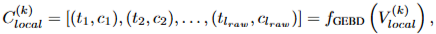
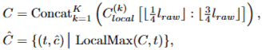
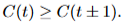
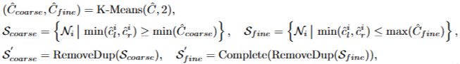
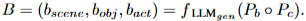
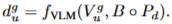
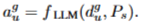
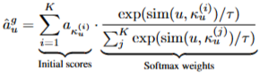
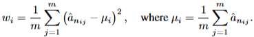
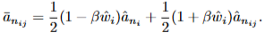

VADTree
Explainable Training-Free Video Anomaly Detection
via Hierarchical Granularity-Aware Tree
사건 경계의 트리 구조와 두 단계 점수 보정
Wenlong Li · Yifei Xu · Yuan Rao · Zhenhua Wang · Shuiguang Deng
고정 길이의 한계에서 사건 트리와 다중 해상도 판단으로
목차
00:10–00:25 · 00:15
이전 세미나의 세 가지 질문
00:25–01:05 · 00:40
어느 구간을 볼 것인가
“MLLM의 시간 단위 불일치”
프레임·전체 영상·고정 클립의 한계
언제 큰 모델을 부를 것인가
“선택적 VLM 질의”
호출을 줄이고 확인한 의미를 재사용
어떤 근거로 점수를 바꿀까
“유사도 기반 재점수화”
배경 특징과 후보 검출 점수의 연결
오늘의 초점: 사건의 시간 길이를 구조화하고, 서로 다른 구간의 판단을 결합하는 방법
고정 창과 사건 길이
01:05–01:50 · 00:45
왼쪽 A · 10초 고정 창
다툼의 앞뒤 정상 장면이 섞이거나, 다툼 자체가 창 경계에서 잘린다.
오른쪽 B · coarse와 fine
9.0–14.6초의 전체 다툼과 그 안의 언쟁·공격을 서로 다른 길이로 표현한다.
사건 길이와 구간 정합
01:50–02:30 · 00:40
가로축 · 사건 지속 시간
짧은 사건부터 긴 사건까지. 세로축은 정답 사건과 가장 잘 겹치는 후보 구간의 시간 IoU.
곡선과 점의 의미
고정 10초 창은 자기 길이에서 유리하다. 트리는 여러 길이의 후보를 낸다.
수치의 범위
UCF의 Fig. 1 평균 0.52는 중복 노드 포함 구성. 최종 VADTree는 Table 14에서 0.47.
VADTree 전체 경로
02:30–03:05 · 00:35
경계 신뢰도
03:05–04:05 · 01:00

k번째 겹침 창의 프레임마다 경계 신뢰도 c를 생성

각 창의 l_raw 프레임 중 중앙 절반만 전역 시간에 연결

전체 신호 C(t)의 국소 최대를 경계 후보로 선택
재귀 분할과 중단
04:05–05:10 · 01:05
분할 기준
노드 Nᵢ의 프레임 구간에서 최대 경계 후보 ĉ_max를 골라 자식 둘로 나눈다.
중단 기준
후보가 없거나 ĉ_max < γ_min = 0.4이면 그 노드의 분할을 멈춘다.
남는 구조
Nᵢ는 좌우 경계 신뢰도와 영상 구간 Vₗ:ᵣ을 담는다. 부모도 남는다.
시간은 절차 설명용 예시. 실제 분할은 이상 점수나 정답 라벨로 결정하지 않는다.
두 시간 해상도
05:10–06:10 · 01:00
경계 신뢰도의 두 무리
Ĉ_coarse / Ĉ_fine은 경계 후보 신뢰도의 두 집합. S_coarse / S_fine은 각 기준으로 선택한 노드 집합이다. 고정 깊이가 아니다.
중복 제거와 보완
S′는 중복 제거·빈 구간 보완 뒤 집합이다. RemoveDup은 세밀한 노드를 남기고 Complete는 fine의 빈 시간 구간을 채운다.

ĉl·ĉr = 노드 양 끝의 경계 신뢰도구간별 초기 판단
06:10–07:05 · 00:55
① 공유하는 사전 지식 B
B = (b_scene, b_obj, b_act): 장면·객체·행동 사전 지식.
② 노드별 영상 설명 d
dᵍᵤ: g 집합의 u번 노드에서 뽑은 프레임을 VLM이 설명한 문장.
③ 초기 이상 점수 a
aᵍᵤ: 설명에 대해 LLM이 매긴 초기 이상 점수, 0·0.1·…·1.



군집 내 점수 보정
07:05–08:10 · 01:05

이웃의 범위
같은 coarse 집합 또는 같은 fine 집합 전체에서 시각 특징이 비슷한 top-K 노드를 찾는다.
식의 가중치
ImageBind 특징의 코사인 유사도를 softmax로 바꾼다. 시간상 옆 구간만 뜻하지 않는다.
의도와 위험
독립 점수의 흔들림을 줄이지만, 비슷한 정상 장면이 섞이면 실제 이상도 희석될 수 있다.
부모·자식 점수 융합
08:10–09:15 · 01:05


Eq. 9 · 자식들 사이의 차이
한 부모에 속한 자식들의 보정 점수 분산을 계산한다.
Eq. 10 · 가중치 이동
정규화된 분산이 커질수록 긴 부모보다 짧은 자식 점수의 비중이 높아진다.
β = 0.4 계산
분산 0: 부모/자식 50/50
분산 1: 부모/자식 30/70
융합 계산 예시
09:15–10:05 · 00:50
분산 0이면
같은 부모 아래 자식 판단이 일치하는 경우: 0.5 × 0.3 + 0.5 × 0.9 = 0.60
분산 1이면
자식 판단이 크게 다른 경우: 0.3 × 0.3 + 0.7 × 0.9 = 0.72
수치는 식의 작동을 설명하기 위한 가상 예시. 실제 영상·실험 결과가 아니다.
실험의 검증 질문
10:05–10:35 · 00:30
UCF-Crime · XD-Violence · MSAD
프레임 ROC-AUC와 AP를 분리사전 지식 · 이웃 보정 · 부모·자식 융합
UCF 누적·제거 실험후보 구간 수 · GPU 시간 · 정성 사례
샘플 수와 총비용을 구별UCF-Crime 비교
10:35–11:25 · 00:50
비교 범위
오른쪽 AUC 열은 프레임 ROC-AUC. 같은 회색 영역의 training-free 방법끼리 먼저 비교한다.
결과
EventVAD 82.03 → VADTree 84.74: +2.71%p.
SUVAD 83.90보다 +0.84%p.
해석 제한
위쪽 fine-tuning·verbalized learning 행까지 모두 이긴 결과가 아니다.
XD-Violence 비교
11:25–12:20 · 00:55
두 지표
원문 수치 열은 AP 다음 AUC. 높은 AUC가 높은 AP를 자동으로 뜻하지 않는다.
AUC
EventVAD 87.51 → VADTree 90.44: +2.93%p.
AP와 입력
VADTree 67.82 < SUVAD 70.10. 별표 VADTree*는 음향을 추가한 별도 구성.
MSAD의 결과 범위
12:20–12:55 · 00:35
전체 AUC·AP
VADTree 89.32 / 71.41: 이 표의 비교 행에서 가장 높다.
이상 특화 AUCₐ·APₐ
π-VAD 71.25 / 77.86 > VADTree 67.85 / 75.49.
구성요소 기여
12:55–13:45 · 00:50
71.57 → 75.67
사전 지식 추가: +4.10%p
75.67 → 83.05
같은 집합의 유사 이웃 보정: +7.38%p
83.05 → 84.74
부모·자식 융합: +1.69%p
구간 수와 정합
13:45–14:45 · 01:00
촘촘한 10초 창 69,634
VADTree 8,613
촘촘한 창 0.51
최종 트리 0.47
촘촘한 창 82.87
최종 트리 84.74
전체 계산 비용
14:45–15:55 · 01:10
VADTree 62.3 GPU·h
LAVAD 55.9 GPU·h
44.5 GPU·h
AUC 84.65
기본 VLM caption 40.0
LLM scoring 21.4 GPU·h
UCF 정성 사례
15:55–16:45 · 00:50
절도 · 왼쪽
빨간 GT 구간과 파란 최종 점수의 상승이 대체로 대응한다. 시작·끝은 정확히 일치하지 않는다.
정상 매장 · 오른쪽
물건을 들고 움직이는 행동을 일상 업무로 설명하고 점수를 낮게 유지한다.
청록=coarse, 분홍=fine, 빨간 영역=GT, 파란 선=최종 이상 점수. 설명 문장은 모델 생성 텍스트.
XD 정성 사례
16:45–17:35 · 00:50
행동 변화 · 왼쪽
제압·저항 행동이 보이는 구간에서 짧은 노드와 점수 상승이 대응한다.
장면 전환 · 오른쪽
충돌 장면과 인터뷰 구간의 설명·점수가 달라 긴 맥락과 짧은 단서가 갈린다.
정성 사례는 작동 방식을 보여준다. 평균 성능과 설명 충실도는 별도 평가가 필요하다.
한계와 후속 질문
17:35–18:30 · 00:55
VLM이 작은 이상 단서를 시각 입력에서 놓치면 뒤의 언어 추론·점수 보정으로 복구하기 어렵다.
사전 지식이 유용해도 설명을 한쪽으로 유도할 수 있다. 문장과 실제 영상의 일치를 따로 봐야 한다.
전체 트리와 다른 노드의 점수를 참조한다. 미래 프레임 없이 언제 점수를 확정할지는 별도 설계다.
AUC, AP, 구간 수, GPU 시간은 서로 다른 결과다. 같은 단위와 입력 조건에서 비교해야 한다.
첫 항목은 저자가 명시한 한계. 나머지는 방법과 실험 범위에서 도출한 발표자의 후속 검증 질문.
결론
18:30–19:00 · 00:30
고정 길이 창과 다양한 사건 길이의 불일치
일반 경계 트리 → 구간 판단 → 이웃 보정 → 부모·자식 융합
AUC와 샘플 수의 개선
AP·총비용·설명 충실도는 별도
원문 수식 1–3 · 경계 신호
질의응답용 · 본편 시간 미포함
c: 경계 신뢰도 / t: 전체 영상 프레임 인덱스 / lraw: GEBD 입력 길이
원문 수식 4 · 두 군집 구성
질의응답용 · 본편 시간 미포함
경계 기반 선택
노드 좌우 경계 신뢰도의 최솟값을 군집 경계값과 비교
구간 완결성
RemoveDup 이후 Complete로 빈 구간을 채운다.
원문 수식 5–7 · 설명과 점수
질의응답용 · 본편 시간 미포함
B=(장면, 객체, 행동) / d: VLM 설명 / a: LLM 점수 / g: coarse 또는 fine
원문 수식 8 · 군집 내 보정
질의응답용 · 본편 시간 미포함
K
같은 군집에서 참조하는 의미 이웃 수
τ
이웃 가중치 분포의 집중도를 정하는 온도
보정 점수는 선택된 이웃 초기 점수의 가중 평균 범위 안에 있다.
원문 수식 9–10 · 분산과 융합
질의응답용 · 본편 시간 미포함
원문은 ŵ의 정규화를 서술하지만 구체 식과 분산이 모두 같은 경우의 처리를 명시하지 않는다.
설명과 수식의 구분
β ≥ 0, 0 ≤ ŵ ≤ 1이면 부모 가중치는 0.5 이하이다. “낮은 분산에서 부모가 지배”라는 문장은 수식보다 강한 표현이다.
융합 가중치 계산 예시
질의응답용 · 본편 시간 미포함
부모 점수 0.3 · 자식 점수 0.9
ŵ는 부모 아래 전체 자식 점수들로 계산되는 값.
이 데모는 ŵ를 입력받아 Eq. (10)의 동작만 보여준다.
설명용 가상 점수 · 논문 실험값과 구분
Table 1 원문 · UCF-Crime
질의응답용 · 본편 시간 미포함
범위
여러 학습 설정을 한 표에 제시한다. Training-free 비교와 전체 방법 비교를 구분한다.
주요 행
VADTree 84.74
SUVAD 83.90
EventVAD 82.03
LAVAD 80.28
Table 2 원문 · XD-Violence
질의응답용 · 본편 시간 미포함
AP와 AUC
AUC: VADTree 90.44
AP: VADTree 67.82 / SUVAD 70.10
별표 표기
추가 음향 모달리티 사용
VADTree*는 Kimi-Audio-7B-Instruct로 음향 캡션 생성
Table 3 원문 · MSAD
질의응답용 · 본편 시간 미포함
근소한 AP 차이
전체 AP: 71.41 − 71.26 = +0.15%p
반복 실험에 따른 MSAD 분산은 이 표에서 제공하지 않는다.
Table 4 · 트리 구성 민감도
질의응답용 · 본편 시간 미포함
γmin = 0.4
기본 K-means 두 군집: 84.74
Fine 단독 표기 행: 82.81
K-medoids
같은 임계값의 두 군집: 85.24
기본 보고 설정은 K-means 유지
Table 5·13 · 누적·제거 실험
질의응답용 · 본편 시간 미포함
Tables 5·10의 사전 지식 이후 Fine 기준값이 일치하지 않는다. 서로 다른 표의 중간 행을 하나의 실험 경로로 합치지 않는다.
Table 6 · 모델 조합
질의응답용 · 본편 시간 미포함
성능 범위
UCF AUC 83.56–84.74
검토한 네 조합에서 성능이 유지됨
재현 명세
본문과 표의 LLaVA 명칭 차이
프레임 수·해상도 차이까지 함께 확인
Table 14 · 샘플링 구성별 비교
질의응답용 · 본편 시간 미포함
NoS / mIoU / mIF
구간 개수 / 사건별 최대 IoU의 평균 / 교차 프레임 수 기반 정합성
중복 포함 구성
VADTree + Redundant: 12,440구간
mIoU 0.52 · 최종 AUC는 미보고
Table 16 · 구성요소별 실행 비용
질의응답용 · 본편 시간 미포함
기본 Think 비용
VLM caption 40 GPU·h
LLM scoring 21.4 GPU·h
Coarse만 사용하는 선택
16.5 GPU·h · AUC 82.81
완성 모델과 정확도·비용이 다르다.
반복 실험과 원문 표기
질의응답용 · 본편 시간 미포함
| 확인 지점 | 발표의 처리 |
|---|---|
| VADTree 84.74 / 84.49 / 84.73 | 평균 84.65 · 3회 결과를 그대로 제시 |
| δ = 0.25 | 최댓값−최솟값과 일치 · 표준편차로 부르지 않음 |
| Table 11의 τ=100 Fine | 표는 83.02 · 본문 82.43과 다름 |
이전 발표 원문 · EventVAD
질의응답용 · 본편 시간 미포함
이번 본편 3·4장에 연결. 기존 대본 Slide 4–6의 질문과 설명을 요약했다.
이전 발표 원문 · MemoVAD
질의응답용 · 본편 시간 미포함
이번 본편 3·16·21장에 연결. 선택적 질의와 샘플 구간 수 축소는 서로 다른 비용 제어 방식.
이전 발표 원문 · BEM
질의응답용 · 본편 시간 미포함
이번 본편 3·21장에 연결. BEM의 객체 confidence와 VADTree의 사건 anomaly score를 구분.
질의응답과 출처
질의응답용 · 본편 시간 미포함
방법
경계 신뢰도와 이상 점수의 차이
Coarse·Fine의 역할
유사도 보정과 분산 융합
근거의 범위
AP와 AUC의 순위 차이
샘플 수와 GPU 시간의 차이
설명 정확성과 온라인 적용
Wenlong Li et al. · VADTree · NeurIPS 2025
이번 발표는 제공된 논문과 이미지의 분석. 모델 실행·실험 재현 결과는 포함하지 않는다.